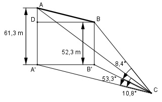

Aufgabe 204 Eine Eisenbahnbrücke soll über ein Tal von A nach B verlaufen. A liegt 61,3 m und B 52,3 m über einem Talpunkt C. Der Horizontalwinkel bei C = 53,3°, der Höhenwinkel von C zu A = 10,8°, der zu B = 8,4°. Wie groß ist die Länge l der Bahnstrecke?

Im Dreieck AA’C: (rechter Winkel bei A’) 61,3 m tan 10,8° = ---------- |*A’C A’C A’C * tan 10,8° = 61,3 m |:tan 10,8° 61,3 m 61,3 m A’C = ----------- = ---------- = 321,3 m tan 10,8° 0,1908 Im Dreieck BB’C: (rechter Winkel bei B’) 52,3 m tan 8,4° = ---------- |*B’C B’C B’C * tan 8,4° = 52,3 m |:tan 8,4° 52,3 m 52,3 m B’C = ----------- = --------- = 354,1 m tan 8,4° 0,1477 IM Dreieck A’B’C : Fall SWS: Cosinussatz: A’B’2 = A’C2 + B’C2 - 2 * A’C * B’C * cos 53,3° A’B’2 = 321,32 + 354,12 - 2*321,3 * 354,1 * 0,5976 A’B’2 = 92 639,8 |√ A’B’ = 304,4 m A’B’ = DB Im Dreieck ADB: Satz von Pythagoras: AB2 = (61,3 m – 52,3 m)2 + DB2 AB2 = 92 m2 + 304,42 m2 AB2 = 92 740,4 |√ AB = 304,5 m = l